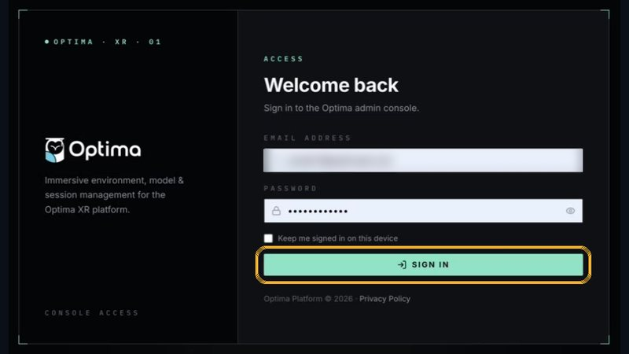
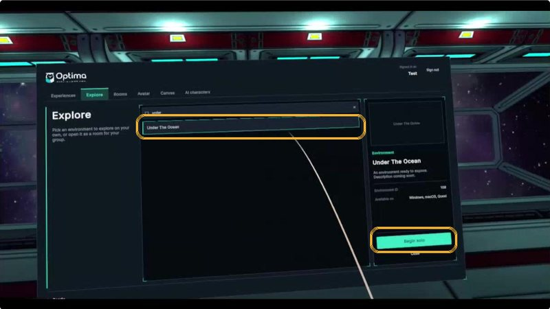
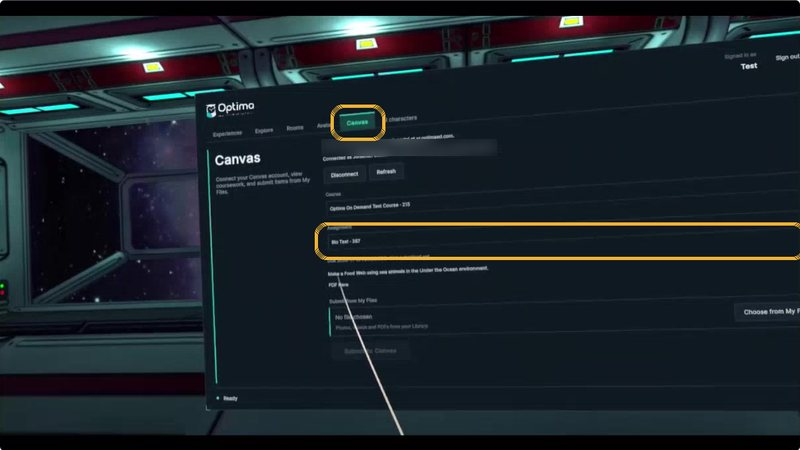
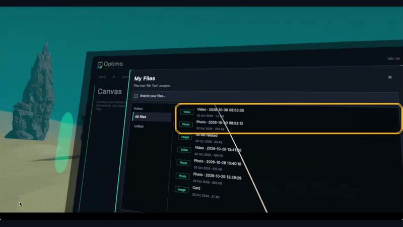

What she carried, what she left
Harriet takes a note and some eggs from the Quaker lady, her week’s food, her last coins, and John’s new shoes.
She leaves the quilt on a doorstep. Build both piles.
Build the two piles at the gate
One side: what Harriet left behind. Other side: what she carried north.
Tap the box next to each step when you finish it.
- 🖥️ Before you put on your headset
- Step 1 · Know your modelsYou need these models. In VR, type the first word in the Filter models box.
- OptimaED Chicken: the Quaker lady’s hens (use 3)
- Flower Set 3: hollyhocks by the fence
- Williamsburg (Blanket): the quilt, left on the doorstep
- Basket: the market basket
- School Supplies: Paper: the note for Ezekiel Hunn
- Gold Coin: her last coins
- Williamsburg (18th Century Shoe): John’s new brogans
- 🥽 In VR
- Step 2 · Go in🔗 First time? Connect Canvas at xr.optimaed.com first. See Having trouble in VR? below.
- Put on your headset. Open the On-Demand app.
- Click Explore. Type Farm in the Filter environments box.
- Click Farm Town (Micro), then Begin Solo.
- Step 3 · Build itOpen your menu (top button, right controller) and click Models. Build in this order:
- the yard: chickens and hollyhocks by the fence
- left behind: the quilt on the doorstep
- carried north: the basket and note, the coins, the shoes
✋ To move a model: grab it with the palm trigger (under your middle finger). Use both palm triggers to make it bigger or smaller. - Step 4 · Practice your 2 sentencesStand at the gate, like Harriet. Practice these 2 sentences out loud:🗣 “Harriet ___ the ___. It mattered because ___.”
- Step 5 · ExtraVR onlyHang Earth’s Moon over the yard. It was shining when she tiptoed through the gate. Skip this step if you run out of time.
- Step 6 · Record and submit
- Stand back so you can see both piles and the fence.
- Open your menu. Click Library, then Camera, then Video.
- Record. Show your build and say your 2 sentences. Stop by 30 seconds.
- Click the Canvas tab. Pick 21.2 VR · The Quilt on the Doorstep.
- Click Choose from My Files. Pick your video. Click Use this file.
- Click Submit to Canvas. Look for the green Submitted tag.
📌 This video is the only thing you turn in. To fix it, record and submit again. - ✅ After
- Step 7 · Check and leave
- Press the Meta button on your right controller. Click Quit.
- Open the Canvas assignment. Check that your video is there.
🛟Having trouble in VR?Steps with pictures, and a how-to video
How-to video: Optima On-Demand and Canvas
These pictures come from other maps. Your map will be Farm Town (Micro), but the buttons are the same.
🖥️ First time only: connect Canvas (on your computer)

1Log inGo to xr.optimaed.com on your computer. Log in with the same login you use in VR.
 2Connect to Canvas
2Connect to CanvasClick Connect to Canvas. Log in with your usual Canvas username and password, then click Authorize. You will see Canvas connection completed.
 3Find our class
3Find our classClick Canvas on the left and pick our class. Our assignments show up. You only do this part one time.
📄 Only if the assignment has a file
 4Get the file ready
4Get the file readyOpen the assignment and click Open in Canvas to download the file. Then click My Files and Upload File.
🥽 In the headset
 5Explore tab
5Explore tabPut on your headset. Click the Explore tab and type the map’s name in Filter environments.

6Begin SoloClick the map, then click Begin Solo.

7Read the assignmentPress the top button on your right controller to open your menu. Click the Canvas tab and pick our assignment to read the directions. Tip: point at a mint side grip and squeeze to pull the tablet to your hand.
 8Bring out the models
8Bring out the modelsClick Models. Type the exact name in the search box, or scroll with your thumbstick. Click a model to bring it out.
 9Move and resize
9Move and resizeGrab a model with the palm trigger. Turn and move it with the thumbstick. Use both palm triggers to make it bigger or smaller.
 10Need a file?
10Need a file?Click Library, then Files. Pick your file to place it in the world, next to your model.
 11Record a video
11Record a videoClick Library, then Camera. Move the tablet until your whole scene fits. Slide Height or the zoom bar if you need to. Switch to Video and start recording. Say your 2 sentences, then stop at 30 seconds or less.

12Pick your videoClick the Canvas tab and pick our assignment. Click Choose from My Files, pick your newest video, then click Use this file.
 13Submit to Canvas
13Submit to CanvasClick Submit to Canvas and look for the green Submitted tag. To leave VR, press the Meta button on your right controller, then click Quit.
🔁 Didn’t work in VR? Two other ways
 14Use the website
14Use the websiteGo to xr.optimaed.com and click Canvas. Pick our assignment, click Choose from My Files, pick your video and submit it.
Your videos save to My Files at xr.optimaed.com on their own. You can also download your video there and upload it to the Canvas assignment yourself.
- Your video is 30 seconds or less, shows the quilt on one side and the basket, coins and shoes on the other, and you say 2 sentences: one thing Harriet took or left, why it mattered, with a detail from Chapter 6.
Quilt square earned!
Only Imagination Trip travelers earn this one. Pieced from scraps, green, brown and yellow, like the quilt Old Rit sewed.
Bound for the promised land
Five questions about Chapter 6. Pick the answer the book gives.
One question at a time
Say 2 sentences on video (30 seconds or less)
Pick one thing Harriet takes with her or leaves behind in Chapter 6. In 2 sentences, say what she does with it and why it mattered, with one detail from the chapter.
- Harriet ___ the ___.
- It mattered because ___.
- You finished the game.
- Your video is 30 seconds or less.
- Your 2 sentences have all 4 checks.
- Open the Canvas assignment 21.2 VR · The Quilt on the Doorstep and click Start Assignment.
- Click Media, then Record/Upload Media, then Start Recording.
- Say your 2 sentences. Stop at 30 seconds or less. Click Finish, then Save.
- Click Submit Assignment.
📌 This video is the only thing you turn in.